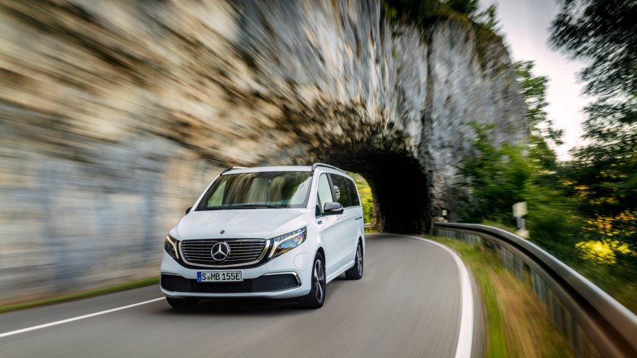
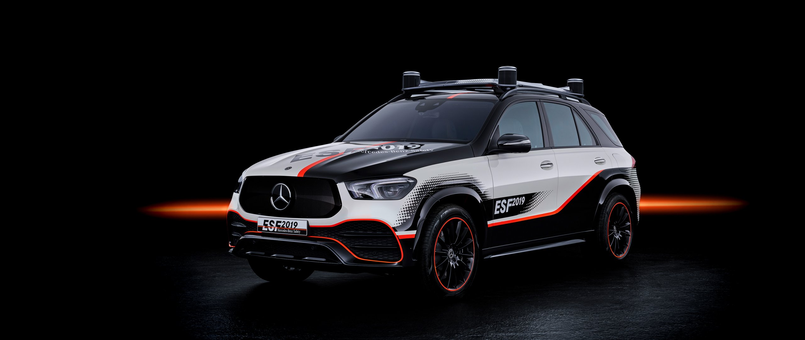

NEWS
Next-Gen Mercedes S-Class Rendering Shows Off Updated Styling
At the rear, the rendering shows off the S-Class' new taillights that are similar in design to taillights found on other new or recently refreshed Mercedes models. The chrome strip spanning between the taillights is a nice touch. The rendering shows a redesigned S-Class rear end with a new rear fascia and tailpipes. More ...
Mercedestrophy world final 2019
Departing from five continents, 29 teams will travel to the home of the automobile to enjoy one spectacular golf event. From 30 September to 5 October, the MercedesTrophy World Final 2019 takes place in Stuttgart. Golfers worldwide have participated in local MercedesTrophy tournaments throughout the season. More ...
Mercedes-AMG GLB35 2020 revealed: 225kW/400Nm seven-seat SUV unleashed
Mercedes-Benz has filled another niche with its AMG-tuned GLB35 seven-seater, uncovered ahead of next month’s Frankfurt motor show and an Australian introduction around the middle of next year.bases. More ...

The new EQV
As the next member of the Mercedes-Benz EQ family, the EQV combines emission-free mobility with impressive driving abilities, high functionality and aesthetic design.The technical highlights include a range of 405 kilometres⁷ and the rapid charging of the high-voltage battery from 10 to 80 per cent in less than an hour⁸. The EQV also offers ultimate comfort in the interior and unparalleled flexibility. Customers can also choose between two different wheel bases. More ...

Mercedes-Benz ESF 2019: New safety ideas for a new mobility
Electric drive systems and automated driving are key technologies for the mobility of the future. This leads to changes in the requirements for in-car safety technology: firstly, much more flexible seating positions in the interior of such vehicles require a different form of occupant protection. More ...